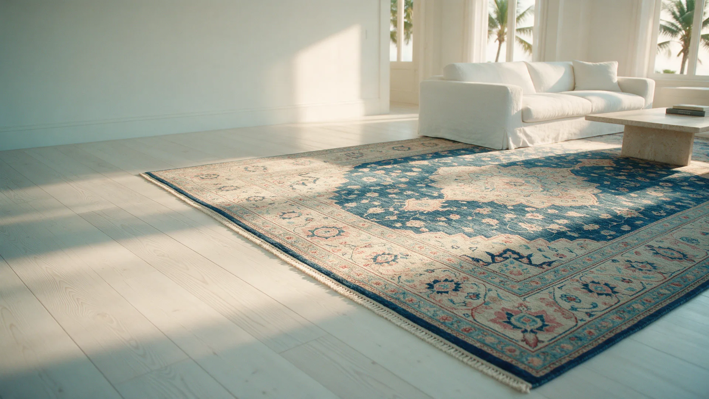
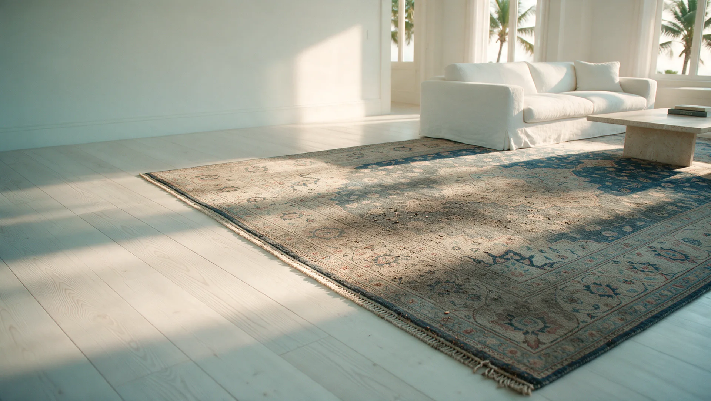
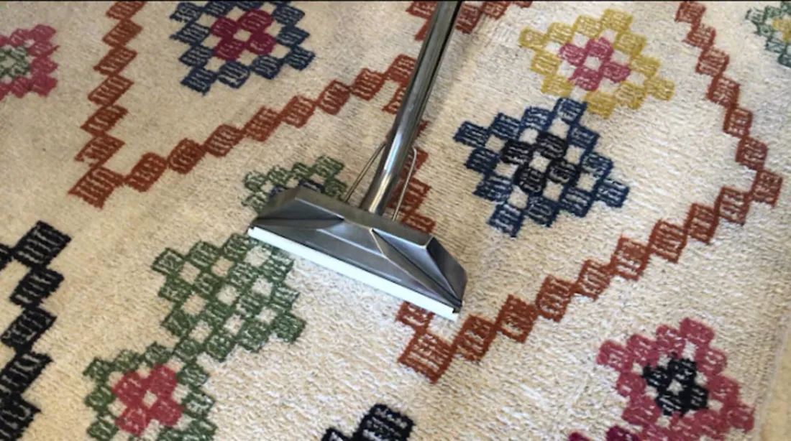
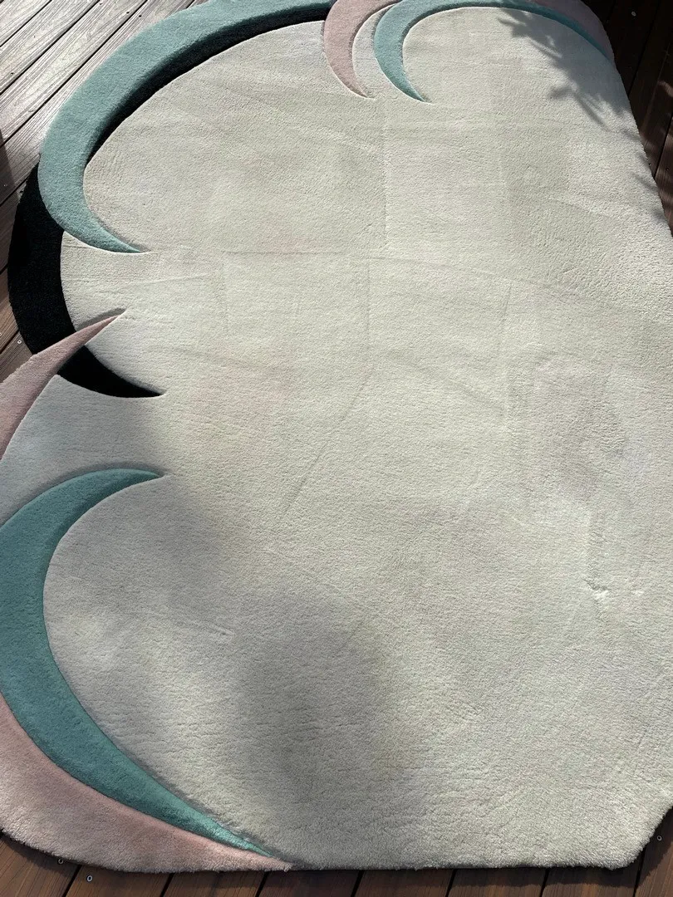
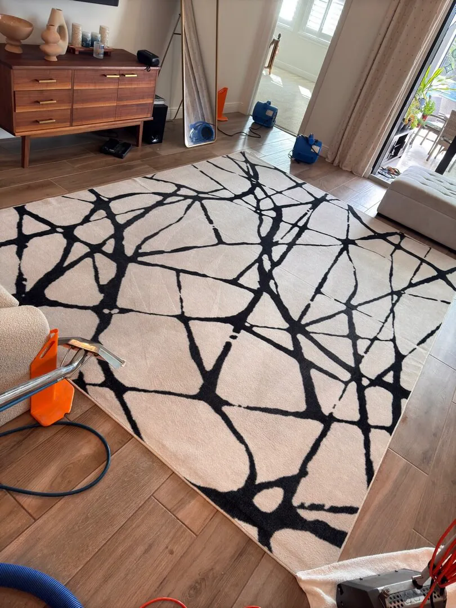
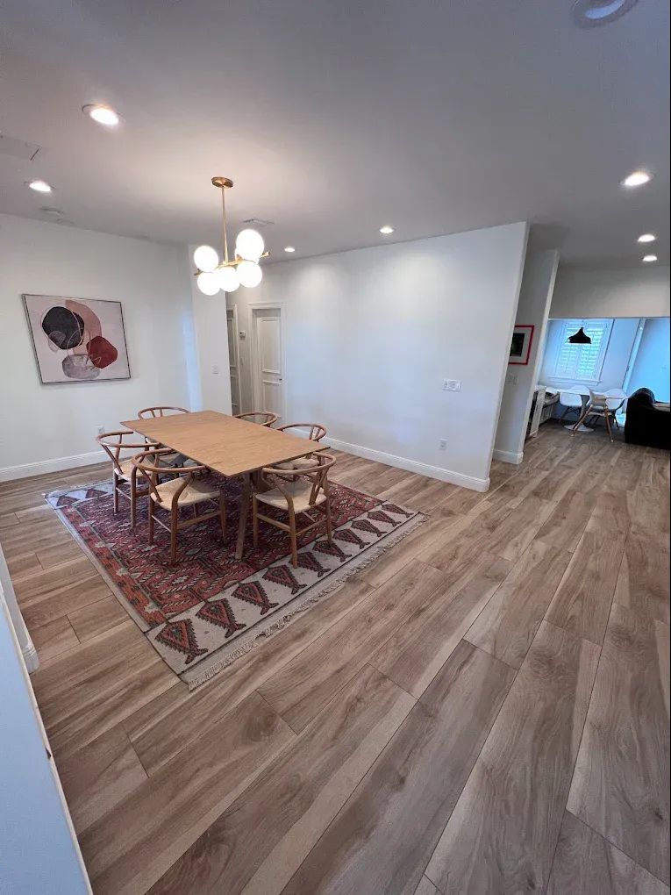
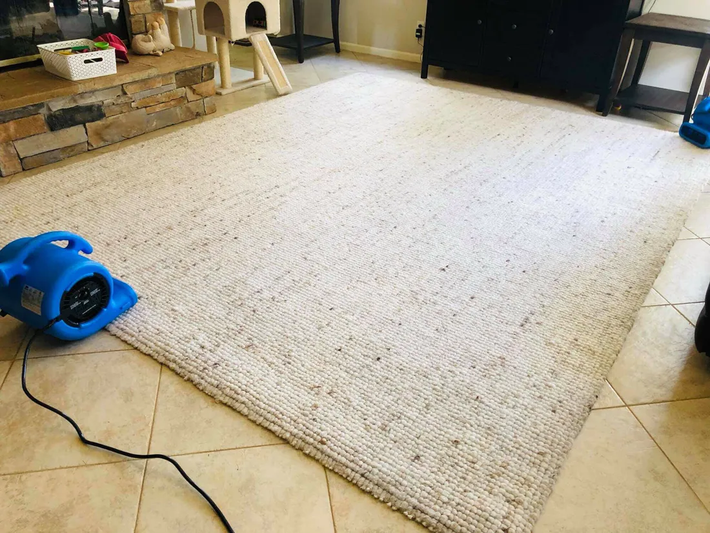
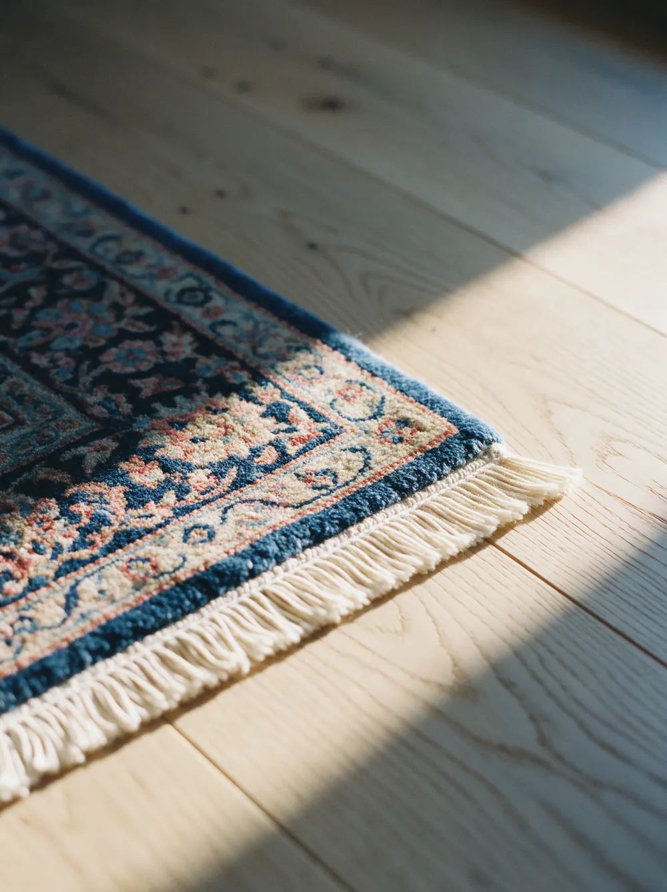

Area rug cleaning in Palm Beach County
From everyday synthetics to wool, viscose, oriental and silk. Cleaned in your home or at our facility, matched to the fiber.
- 240five-star Google reviews
- From $1.50per sq ft
- 100%satisfaction guarantee
How much does area rug cleaning cost?
Harbor prices area rug cleaning by the square foot, based on the fiber: $1.50 to $3 for synthetic rugs, $2.50 to $4.50 for natural fibers like wool, cotton and jute, $4 to $6 for delicate fibers like viscose and art silk, and $6 to $10 for fine oriental and silk rugs.
Rugs can be cleaned in your home, or taken to Harbor's facility for a deeper restoration. Every clean is backed by a 100% satisfaction guarantee.

Drag to compare. An illustration of a hand-knotted rug before and after a deep clean: dulled colour and a tired fringe, refreshed.
Rug cleaning, priced by fiber
Different fibers need different care, so the fiber sets the price. Your personalized quote confirms the exact figure for your rug.
Example: an 8 × 10 ft wool rug is 80 sq ft, so it falls between $200 and $360.
| Fiber | Examples | Per sq ft |
|---|---|---|
| Synthetic | Nylon, olefin, polyester | $1.50–$3 |
| Natural | Wool, cotton, jute | $2.50–$4.50 |
| Delicate | Viscose, art silk, silk highlights | $4–$6 |
| Fine oriental & silk | Persian, oriental, handmade silk | $6–$10 |
In your home, or at our facility
Two ways to clean, and two levels of clean, so every rug gets what it actually needs.
In-home cleaning
The rug stays where it is. The Harbor crew protects the floor around it and cleans it in place, the convenient choice for everyday rugs and regular care.
Facility cleaning
The rug comes to Harbor's facility for deeper restoration, the right choice for heavily soiled rugs and for delicate, heirloom and fine oriental pieces.
Surface clean
Gentle top-layer extraction that refreshes the pile and colour.
Deep wash
A full-immersion wash that restores the whole rug, foundation and fringe included.
Get a Personalized QuoteReal area rug jobs
Photographs taken by the Harbor crew in Palm Beach County homes.







Why every rug needs fiber-matched care
A rug is not just small carpet. The fiber decides how it should be cleaned.
- Synthetics
- Nylon, olefin and polyester are durable and forgiving, and respond well to a thorough clean.
- Wool and natural fibers
- Wool, cotton and jute hold soil deep in the fiber and need gentler solutions and careful drying.
- Viscose and silk
- Viscose, art silk and silk are delicate and easily damaged by the wrong method, which is why they are priced and handled separately.
The seven steps behind every rug clean
The same seven-step process as our carpet cleaning, adjusted to each fiber.
- Inspect and protect
- Vacuum
- Pre-spray and dwell
- Bristle-machine agitation
- Hot-water extraction
- Dry passes
- Air movers
Area rug questions, answered
Do you clean rugs in my home or take them away?
Both. Rugs can be cleaned in your home, or taken to Harbor's facility for a deeper restoration. Delicate, heirloom and heavily soiled rugs usually benefit most from facility cleaning.
Can you clean viscose and silk rugs?
Yes. Viscose, art silk and silk-highlight rugs are cleaned as delicate fibers, and fine silk rugs as a specialist category, each with methods suited to the fiber.
Do you clean Persian and oriental rugs?
Yes. Persian, oriental and handmade silk rugs are cleaned as fine rugs, with fiber-matched care.
What is the difference between a surface clean and a deep wash?
A surface clean is a gentle top-layer extraction that refreshes the pile and colour. A deep wash is a full-immersion restoration that cleans the whole rug, foundation and fringe included.
Can you remove pet stains and odors from rugs?
Yes. Pet stains and odors in rugs are treated through Harbor's pet stain and odor removal service.
Do you offer rug protection?
Yes. An optional fiber protection treatment can be applied after cleaning to help the rug resist future spills and stains.
Is there a guarantee?
Yes. Harbor's area rug cleaning is backed by a 100% satisfaction guarantee.
Area rug cleaning near you
- Jupiter
- Palm Beach Gardens
- Palm Beach Island
- West Palm Beach
- Wellington
- Boynton Beach
- Delray Beach
- Boca Raton
- Deerfield Beach
Get a Personalized Quote for area rug cleaning
Tell us about your rugs and we will get back to you with a personalized estimate. Prefer to talk? Call or text (561) 301-1977.
Your request is ready.
Send it to Harbor by text or email. Nothing is sent until you choose.
Text it to Harbor Email it instead